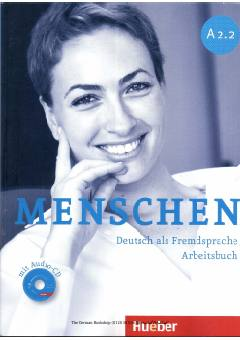

MANemis tilini o'rganuvchilar uchun mo'ljallangan A2 darajasidagi amaliy mashqlar to'plami.
Ushbu kitob nemis tilini o'rganuvchilar uchun mo'ljallangan 'Menschen' o'quv kursining A2 darajasidagi ikkinchi qismidir. Unda til ko'nikmalarini rivojlantirishga qaratilgan mashqlar va grammatik tushuntirishlar jamlangan.